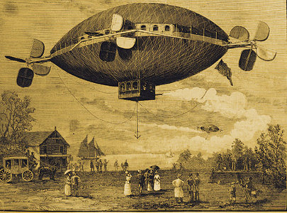

Gravure dans Scientific American

Publication d'un récit décrivant l'invention de M. Moses S. Cole, de Greytown, Nicaragua ... Il est dit que ce vaisseau peut s'élever, descendre, être dirigé
et propulsé dans toute direction à la volonté du pilote, donnant des détails complets sur la manière dont
l'aéronef a été construit – un ballon gonflé de forme semi-sphéroïde, tandis qu'au est attaché un
ballon semblable – piloté et dirigé "A Novel Form of Aerial Vessel", Scientific American, 1er jan 1887 < Taylor, Bill: "A
picture and a thousand words", The Star, 21 sep 2008.
A Saint Louis, Missouri ? des centaines de personnes
voient pendant 30 mn, au sommet de Telegraph Hill, 1 lueur non identifiée aux formes et couleurs changeantes à
côté d'un poteau électrique portait des lampes "A Mysterious
Light", San Francisco Chronicle < Globe-Democrat de St. Louis (Missouri), 26 mars 1887.
À Fontainebleau pluie jaune (pluie de soufre des anciens)
Almanach Hachette 1902.
A Oshkosh, Wisconsin, observation de 3 cercles
lumineux autour du soleil "Three Circles
Seen", The Daily Northwestern, 4 mai 1887.
A Tarbes (France), juste après une tempête énorme,
passant ramasse une grosse boule de glace, étonnante par la chaleur du jour inhabituelle pour la saison. Tout
d'abord on pense qu'il s'agit d'un grand grêlon qui, à travers des conditions climatiques monstrueuses, est
tombé de lui-même. Mais lorsque l'enveloppe de glace fond on s'apperçoit qu'à l'intérieur il y avait une pierre
ou un caillou de forme oblongue, décrit par H. Sudre (professeur de l'Ecole Normale de Tarbes) comme un disque
blanc laiteux faisant 5 mm d'épaisseur et 13 mm de diamètre, avec un poids de 2 g. Plus inhabituel encore, la
pierre de gypse (ou sulfate de chaux hydraté) apparait avoir été taillée et formée par l'homme (très régulier
(...) Il a été assurement travaillé). Des scientifiques s'interrogent sur le problème. Les membres de
l'Académie Française discutent du sujet sous tous les angles Annales de la Société des Météorologues"Une pierre
dans un grêlon",La Nature(Paris), 1887, 2 (23 juillet): 127"Grêlon contenant une pierre", L'Année Scientifique et
Industrielle, 31 (1887): 57Nature, 36 (28 juillet 1887):
311-2, à 312, c.v. "Academie of Sciences," (Paris), sous "Academies and Societies"Oliver Lanard Fassig. Bibliography of Meteorology. U.S. Signal Service, 1889. "M.G. Tissandier - Sur un grêlon contenant une masse pierreuse." Annuaire
de la Société Météorologique de France, 35 (1887): 338. Simple revue de l'article dans Comptes
RendusFort, C. H.: The Book of the Damned, chap. 8"Mystery
of the 'Red Rains' in Japan", The Fresno Bee de Fresno (Californie), 11 octobre 1925.
A Sandersville, Georgie,
observation d'un phénomène lumineux spectaculaire dû à un nuage masquant le soleil à l'ouest "A Strange
Phenomenon", The Atlanta Constitution, 10 juillet 1887.
A Nancy, France, pluie de fourmis Almanach Hachette 1902.
A Pittsburg, Pennsylvanie, de nombreuses
personnes sont réveillées par une lueur orangée baignant tous les environs "Neighborhood News", Saturday
Review de East Liverpool (Ohio), 20 août 1887.
Non loin de Newfoundland, à 10 miles nautiques de
Cape Race, Océan Atlantique, par un temps lourd, le capitaine Moore du paquebot
britannique Siberia voit 1 boule de feu montant de la mer qui flotte penant quelques s à 4 m au-dessus
de la mer, et disparait par la suite. D'autres sources indiquent plusieurs passagers ont été témoins et que la
boule a atteint une altitude de 50 pieds, volé contre le vent, et s'est approchée du navire. L'observation
aurait duré 5 mn, avant qu'elle ne disparaisse vers le sud-est Article du Nieuwe
Amersfoortsche Courant de Amersfoort (Pays Bas), 24 mars 1888Article du Texelse
Courant de Texel (Pays Bas), 11 mars 1888Nature, 37-187, parlant de foudre
en bouleFlammarion, Camille:Thunder
and Lightning, p.68American Meteorological Journal, 6-443 - 12 novembre 1887L'Astronomie, 1887-76 < Fort, Charles Hoy: The
Book of the Damned, Boni and Liveright, 1919, chap.
21, p. 261 / The Complete Books of Charles
Fort, Dover edition, 1974, pp. 273-274 BSAF, 1887LDLN 48Vallée, Jacques: Anatomy 14.
A Fay-Nuih, Indochine, pluie de sangAlmanach Hachette 1902.
{kind=link}
{kind=link}